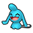
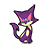
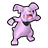

Pokémon
- Wild Audino have a 50% chance of holding an Oran Berry and a 5% chance of holding a Sitrus Berry.
Walking
Walking (rustling grass)
Swarm
During a swarm, the player has a 40% chance of encountering the swarming Pokémon, and a 60% chance that their encounter is taken from the normal encounter table.
| Pokémon | Level | |
|---|---|---|
|
 |
Wynaut | lv. 15-55 |
Pokémon
- Wild Lickitung and Lickilicky have a 5% chance of holding a Lagging Tail.
- Wild Audino have a 50% chance of holding an Oran Berry and a 5% chance of holding a Sitrus Berry.
Walking
Walking (rustling grass)
Memory Link encounters
After viewing the Memory Link flashback "Meeting Friends, Saying Good-Bye", the player may encounter N's Purrloin here. Its appearance rate depends on how many of N's Pokémon the player has already captured, as shown below.
- 0 captured: 40%
- 1-5 captured: 20%
- 6-11 captured: 10%
- 12+ captured: 5%
| Pokémon | Nature | Level | Moves | |||||||
|---|---|---|---|---|---|---|---|---|---|---|
|
 |
Purrloin ♂ | Timid | 7 | Scratch | Growl | Assist | N/A | |||
|
|
|
|
|
|
|
|||||
Hidden Grotto
When a Hidden Grotto's contents regenerate, there is a 20% chance that it will contain a Pokémon. The following Pokémon may be encountered. All of them have their Hidden Ability.
| Pokémon | Rate | Levels | |
|---|---|---|---|
| Watchog | 15% | lv. 55-60 | |
 |
Nidoran♀ | 2% | lv. 55-60 |
 |
Nidoran♂ | 2% | lv. 55-60 |
|
 |
Granbull | 1% | lv. 55-60 |